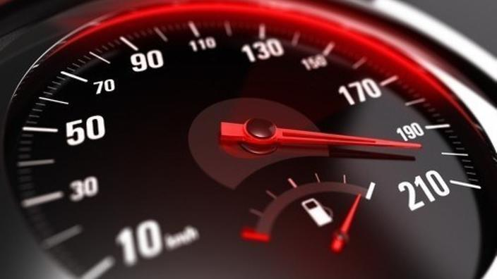
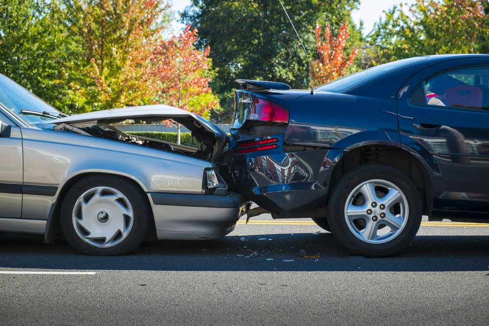
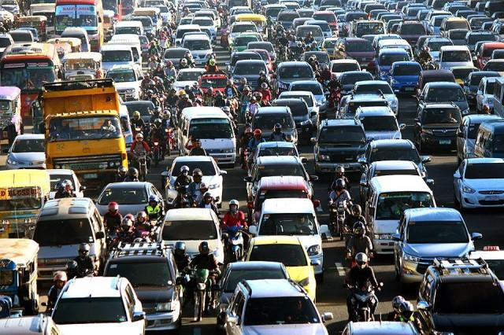

Road Accidents
Overtaking
Overtaking other vehicles can be dangerous. The difficulty with overtaking is judging the space required to complete the manoeuvre safely.
Both single lane and multi-lane overtaking manoeuvres involve risk and require extreme care. If you have any doubts it is best not to overtake and to wait until it is safer.
You must overtake on the right unless a vehicle is waiting to turn right, is stationary, or if you and the other vehicle are travelling in marked lanes. In these instances you may overtake on the left side if it is safe.
When overtaking you must:
Not go over the speed limit
Make sure the road ahead is clear and that there is sufficient space for you to complete the manoeuvre (check side streets and other lanes to ensure nothing will enter this space while you are overtaking)
Check mirrors
Signal each change in position long enough to give sufficient warning to others
Check blind spots for motorcycles and other vehicles before changing your lane position
Pass the vehicle with sufficient space to avoid a collision (you should be able to see the vehicle you have overtaken in your rear vision mirror before you move in front of it)
Give way to traffic already in the lane you are moving to.
When overtaking you must:
Unless you have a clear view of any approaching traffic and you can complete the manoeuvre safely (do not commence an overtaking manoeuvre when approaching a crest, curve or any limited vision situation)
Another vehicle that is stopping or has stopped at a pedestrian crossing, intersection or railway crossing
Across an unbroken (continuous) line, unless the line closest to you is broken
Where a road narrows.
When overtaking you must:
Keep left and allow reasonable space for the overtaking vehicle to pass and move back into the lane
Not increase your speed
Keep within your lane.
Drunk Driving

Driving in the influence of drugs and alcohol is the top cause of road accidents in the Philippines. Alcohol slows reflexes, weakens reasoning, and affects one’s motor skills – definitely unfit to drive. But despite government warnings and road accidents, drunken people still get behind the wheel. If you think you’re going to be drunk for an occasion, bring a driver or else don’t drink at all.
Over Speeding
Blame it to the adrenaline rush – it is undeniable that we often see drivers who enjoy over speeding. Will it still be fun it will cost lives of other people or the driver’s? Any driver must have the responsibility of following all the traffic rules or better be sorry after.
Bad Turns and Reverse
It’s understandable that adjusting speed and direction quick is not easy. But, that’s what signal lights are for. Make driving decisions as swift and wise as possible.
Road rage
Road rage is aggressive or angry behavior exhibited by a driver of a road vehicle, which includes rude gestures, verbal insults, physical threats or dangerous driving methods targeted toward another driver or a pedestrian in an effort to intimidate or release frustration. Road rage can lead to altercations, assaults and collisions that result in serious physical injuries or even death. It can be referred to as an extreme case of aggressive driving.
How to Handle Road Rage
If you find that you have agitated another driver, whether the fault is truly yours or not, do not react or retaliate to the other driver on the road. This will only cause the situation to escalate. Remind yourself that the other driver is just bad at handling stress, avoid eye contact and continue to practice safe driving habits.
Unfortunately, it does not look like this problem is going away any time soon. All you can do is be a considerate, aware driver that follows the rules of the road. While it may be difficult in the heat of the moment, do not give in to feelings of anger or rage on the road. Think twice before you honk the horn or flip that finger, because you never know what may set off the person in the cars around you. Getting home safely is more important than teaching someone a dangerous lesson.
Abrupt Maneuvers
Most of the time, abrupt movements on the road are caused by avoiding other vehicles. Because of the threat of possibly hitting other vehicles or pedestrian, the driver chooses to do sudden maneuvers. Always put your attention to the road and always check through your mirrors. Alertness and quick reflexes should be on driver’s expertise.
Lost Brakes
One of the reasons and most overused excuses of road accidents by drivers are their brakes. It is lame to use it as an excuse because the drivers must have it checked beforehand anyway.
Mechanical Malfunction
Some road accidents are also caused by an interplay of mechanical defects in the car and poor road conditions such as potholes and slippery road surfaces.
BLOWBAGETS is an acronym that lists the things you should check before heading out: Brake, Lights, Oil, Water, Battery, Air, Gas, Engine, Tire, and Self.